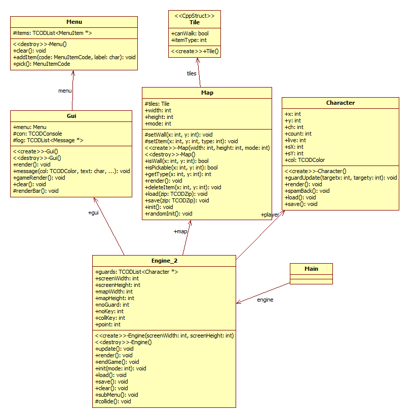

s3275058
Kieu Hoang Anh
Assignment 1
REPORT
Introduction:
This report will shows some research of the assignment 1 about how to program, implement C++ language on computing also the process and problems when researching.
Reference:
-Title of the program: Lock 'n' Chase
-Date: November 20th, 2013
-Name: Kieu Hoang Anh
-ID: s3275058
-Course code: COSC2131: Programming using C++
-Assignment no: 1
-Lecture: Ashok Kumar
How to build/install/Run Program
- Download file Assignment1_s3275058_KieuHoangAnh.zip to computer
- Open terminal
- Extract file Assignment1_s3275058_KieuHoangAnh.zip
tar -xvf Assignment1_s3275058_KieuHoangAnh.zip
- Go to the folder
cd ../Assignment1_s3275058_KieuHoangAnh
- Build
make
- Run program
./ass1.out
-Unistall
make clean
Overview of the implementation:
Diagrams:

Algorithm(s):
In the assignment, I used “Libtcod” libary as the main lib. This libary provided us good features, components and algorithm. The algorithm used to build this program are simple:
The main loop of the game is around the Engine:
while ( !TCODConsole::isWindowClosed())
{
engine.update();
engine.render();
TCODConsole::flush();
}
The Engine object used to store the Gui, Player, Guard and the Map and control them.
-engine.update() used to control the movement, position of Player, Gui
void Engine::update() {
player->update() //player update
for (Character **iterator=guards.begin(); iterator != guards.end(); iterator++)
{
(*iterator)->guardUpdate(player->x,player->y); // guard update
}
}
-engine.render() used to draw all object in to frame.
void Engine::render() {
player->render() //player render
for (Character **iterator=guards.begin(); iterator != guards.end(); iterator++)
{
(*iterator)->guardUpdate(player->x,player->y); // guard render
}
gui->render();// Gui render
map->render();// map render
}
Gui object used to manage some components such as “Live Bar”, “Key Bar”, “Point”, “Game Menu” and “Messages”.
Data structures:
Libtcod is such a cool libary. It provide us many convenient components and their TCODList<T> is one of them. It is friendly for programer. All basic arrayList’s operators can be implement easyly